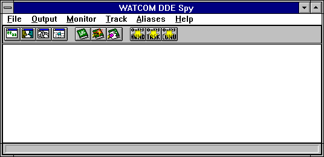
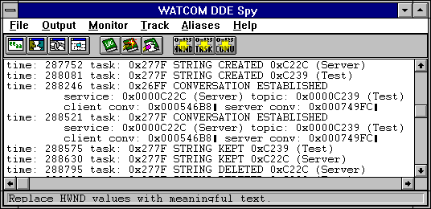
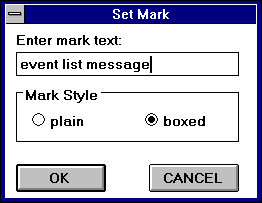
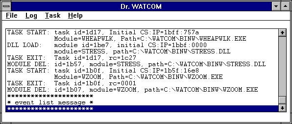
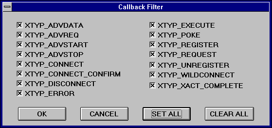
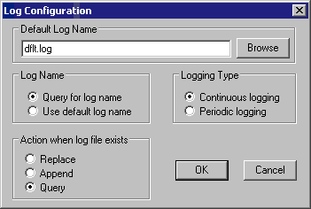
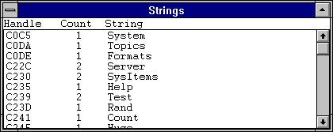
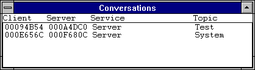
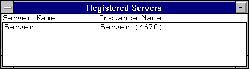
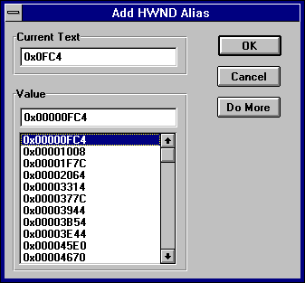

Index of Topics
- - D -
- DDE Spy
The DDE Spy Event List
The DDE Spy Menu Bar
The DDE Spy Toolbar
DDE Spy: Action When Log File Exists
DDE Spy: Automatic Scrolling
DDE Spy: Clearing the Event List
DDE Spy: Configuring the Log File
DDE Spy: Default Log Name
DDE Spy: Log Name
DDE Spy: Logging Type
DDE Spy: Marking the Event List
DDE Spy: Pause Logging
DDE Spy: Pausing the Event List Output
DDE Spy: Saving the Event List to a File
DDE Spy: Setting the Font
DDE Spy: Start Logging
DDE Spy: Stop Logging
DDE Spy: Working with Log Files
Defining Aliases
Disabling Aliases
- P -
- Purging Aliases
- Q -
- Quitting DDE Spy
- S -
- Selecting Information to Monitor
Setting the Callback Filter
Setting the Message Filter
Starting DDE Spy
- T -
- Tracking Conversations
Tracking Links
Tracking Servers
Tracking Strings
Tracking with DDE Spy
- U -
- Using DDE Spy
- W -
- Working with Aliases
DDE Spy
DDE Spy is a debugging tool that allows you to watch all DDE (Dynamic Data Exchange) activity occurring in the system.
DDE Spy also allows you to monitor DDEML errors and registration of various DDE objects, such as strings, conversations,
links, and servers. DDE is one way for different applications running under Windows to communicate with each other.
By watching the communications between applications, you can determine if the information being sent is correct.
If it does not seem correct you can locate the cause of the error.
Using DDE Spy
This section discusses the following topics:
- Starting DDE Spy
- Quitting DDE Spy
- The DDE Spy Menu Bar
- The DDE Spy Toolbar
Starting DDE Spy
To start DDE Spy, double click on the DDE Spy icon. This opens the DDE Spy window. When you start the application,
the Open Watcom DDE Spy window is always empty. This window displays the menu bar and a toolbar.

Figure 1. The Open Watcom DDE Spy window contains the event list, menu bar, and toolbar.
Quitting DDE Spy
To exit DDE Spy, choose Exit from the File menu of the Open Watcom DDE Spy window.
The menu bar consists of the following six menus:
- File
- Save to a file, start and pause logging, and configure the session
Output
- Work with the event list and control its output behaviour
Monitor
- Select the information you want DDE Spy to write to the event list
Track
- Display windows summarizing information for DDE objects tracked by DDE Spy
Aliases
- Replace numeric values with meaningful text
Help
- Access on-line help information

Figure 2. The Open Watcom DDE Spy menu bar.
In the Open Watcom DDE Spy window, the toolbar appears below the menu bar when the Show Toolbar item in the File menu
is checked. To disable this feature, choose the item again from the File menu and the Toolbar disappears. The
following explains the function each toolbar button performs, as well as the equivalent menu item.
- TRACK STRINGS
- Display or hide the strings tracking window. This window displays a list of all strings currently registered with the
operating system. This button is equivalent to the Strings item in the Track menu.
TRACK CONVERSATIONS
- Display or hide the conversations tracking window. This window displays a list of all conversations currently active
in the system. This button is equivalent to the Conversations item in the Track menu.
TRACK LINKS
- Display or hide the links tracking window. This window displays a list of all links currently active in the system.
This button is equivalent to the Links item in the Track menu.
TRACK SERVERS
- Display or hide the servers tracking window. This window displays a list of all servers currently registered with the
operating system. This button is equivalent to the Servers item in the Track menu.
LOG
- Start Logging. This button is equivalent to the Log to File item in the File menu.
MARK
- Record your own comments in the event list. This button is equivalent to the Mark item in the Output menu.
CLEAR
- Clear the event list. This button is equivalent to the Clear item in the Output menu.
ADD HWND ALIAS
- Replace window handle values with text. This is equivalent to the Add Hwnd Alias item in the Alias menu.
ADD TASK ALIAS
- Replace task id values with text. This is equivalent to the Add Task Alias item in the Alias menu.
ADD CONVERSATION ALIAS
- Replace conversation id values with text. This is equivalent to the Add Conversation Alias item in the Alias menu.
Figure 3. The Open Watcom DDE Spy toolbar.
The DDE Spy Event List
Opening DDE Spy reveals an empty window. This is the event list where DDE Spy logs the information you define in
the Monitor menu. Some examples of events are strings being created or deleted and conversations and links being established
or terminated.

Figure 4. Once you start spying, the event list displays the information selected for monitoring.
This section describes the tasks you can perform in relation to the event list.
DDE Spy: Setting the Font
The Font item in the File menu allows you to set the font, style, and size for the text in the DDE Spy window. Choosing
this item opens the Font dialog box. Select the desired font details and click on OK to close the dialog and apply
the fonts.
DDE Spy: Saving the Event List to a File
The Save items in the File menu allow you to save the contents of the event list to a text file. Saving information
to a file enables you to print the output later or annotate the text file on-line.
Choose Save from the File menu in the Open Watcom DDE Spy window to save the event list information into the current
working directory. A message box appears indicating the path to which DDE Spy saved the file.
Choose Save As from the File menu to specify the file to which you want to save the event list information.
This opens a Save As dialog box where you select the desired file. Click on OK when completed. A message box
appears indicating the path to which DDE Spy saved the file.
DDE Spy: Clearing the Event List
Choose Clear from the File menu to delete all information from the current event list.
DDE Spy: Marking the Event List
Use the Mark function to annotate the information in the event list by entering text into it.
- To mark the event list :
-
(1)
- Choose Mark from the output menu.
This opens the Set Mark dialog box.

Figure 5. With the Set Mark dialog, you can annotate the event list by entering text and
choosing a mark style.
(2)
- Type the desired text in the Enter Mark Text field.
The text you enter will appear at the end of the event list
(3)
- Select the desired Mark Style option.
These options determine how the entered text is formatted when it is added to the event list When the boxed option is
selected, the text is displayed bordered by asterisks. With this option the text is easier to find. When the
plain option is selected, the text is displayed as it is entered.
(4)
- Click on OK when completed.
The Set Mark dialog closes and the text in the dialog appears at the end of the event list.

Figure 6. Text you enter in the Set Mark dialog appears in the event list in the selected
style.
DDE Spy: Pausing the Event List Output
The Output to Screen item in the Output menu allows you to temporarily stop writing information to the event list.
When this menu item is unchecked output will not be written to the event list. Although DDE Spy stops writing information
to the event list, it still writes it to the log file if you are currently creating a log file. When DDE Spy is not
writing information to the event list applications will run sightly faster so when you are not interested in viewing the
event list you may want to stop writing to it.
- Note:
- If you mark the event list while the Output to Screen feature is deactivated, the text you enter does not appear in the event
list.
As DDE Spy writes new information to the event list, the information is added to the bottom of the list. Checking
the Auto Scroll item in the Output menu tells DDE Spy to automatically scroll the information in the event list so that the
most recent information written to the event list always appears on the screen.
When the Auto Scroll menu item not checked you must use the scroll bar to scroll down and view any new information
that is added to the event list.
The monitor menu contains items that let you specify the types of DDE events that DDE Spy will report on by recording
them in the event list. Limiting the amount of information logged makes reading the event list more efficient.
When an item appears in the menu with a checkmark, DDE Spy reports on that type of activity. The following describes
various types of activity DDE Spy can monitor.
- Posted Messages
- When the Posted Messages item is checked, DDE Spy makes an entry in the event list whenever a DDE message that has been selected
using the Message Filter dialog is posted to an application's message queue.
Sent Messages
- When the Sent Messages item is checked, DDE Spy makes an entry in the event list whenever a DDE message that has been selected
using the Message Filter dialog is sent to an application.
String Handle Data
- DDE applications use strings to communicate with other applications. These strings are registered with the operating
system by the applications using them. When done with the strings, the applications tell the operating system they
are done and the system destroys the strings. DDE Spy reports on all string operations that occur within the system
when the String Handle Data menu item is checked.
Callbacks
- Callbacks are special functions called by the operating system to process DDE messages. When the Callback item is checked
DDE Spy makes an entry in the event list each time the operating system calls a DDE Callback for a transaction type that
has been selected using the Callback Filter dialog.
Errors
- A DDE error usually indicates that a DDE operation has failed. When the Errors item is checked, DDE Spy reports all
DDE errors that occur within the system.
Conversations
- A conversation is the connection established between two applications that is necessary to perform DDE operations. When
the Conversations item is checked, DDE Spy makes an entry in the event list each time a conversation is established or terminated.
Links
- A link is a relationship between two DDE applications: a server and a client. A link is established for a single
value maintained by the server. When this value changes the server notifies the client. When the Links item is
checked, DDE Spy logs notifications in the event list each time a link is established or terminated.
Setting the Message Filter
The Set Message Filter item opens the Message Filter dialog which lists the various DDE messages that can be posted or
sent. This dialog allows you to select the specific messages you want DDE Spy to write to the event list.

Figure 7. In the Set Message Filter dialog, select the messages on which you want DDE Spy
to report.
Select the messages that you want DDE Spy to report on when posted or sent. A message is activated when its
check box contains a check.
- Use the Set All button in this dialog to activate all of the messages.
- Use the Clear All button in this dialog to deactivate all of the messages.
Click on OK when the desired messages are activated.
Setting the Callback Filter
The Set Callback Filter menu item opens the Callback Filter dialog which lists the various types of transactions for which
a DDE callback function may be called. This dialog allows you to specify the transaction types you want DDE Spy to
report in the event list.

Figure 8. In the Set Callback Filter dialog, select the transaction types on which you
want DDE Spy to report.
Select the transaction types on which you want DDE Spy to report. A transaction type will be reported on when
its check box contains a check.
- Use the Set All button in this dialog to activate all of the transaction types.
- Use the Clear All button in this dialog to deactivate all of the transaction types.
Click on OK when the desired transaction types are activated.
DDE Spy: Working with Log Files
By writing the information in the event list to a log file, you have a file you can look at in case a program you are
running terminates your applications. In such a situation, your event list is lost so you have no information to refer
to when debugging. Writing to a log file also allows you to print the output later or annotate the text file on-line.
DDE Spy: Configuring the Log File
Choosing Configure Log from the File menu opens the Log Configuration dialog where you customize DDE Spy's behaviour when
it logs to a file. This dialog contains four sections where you specify information.

Figure 9. In the Log Configuration dialog you set the desired behaviour for DDE Spy when
logging to a file.
DDE Spy: Default Log Name
In the Default Log Name field, specify the file to which DDE Spy writes when you begin logging. Clicking the Browse
button next to this field opens a Choose Log Name dialog that lets you browse your file structure while choosing the log
name.
DDE Spy: Log Name
The settings in the Log Name section of the dialog indicate to DDE Spy how the name of the log file should be determined
when the Log to File menu item is chosen.
When the Query for Log Name option is selected, DDE Spy presents a prompt each time you select Log to File from the
File menu or the toolbar. This reveals a Choose Log Name dialog where you specify the file to which DDE Spy writes
the log information.
When the Use Default Log Name option is selected, DDE Spy writes the log information to the file indicated in the
Default Log Name field in the Log Configuration dialog. No prompt appears.
DDE Spy: Action When Log File Exists
The options in the Action When Log File Exists section of the Log Configuration dialog dictate how DDE Spy behaves when
you choose Log to File and a log file already exists.
- Replace
- DDE Spy writes over the existing log file. All information in the existing file is lost.
Append
- DDE Spy adds the new information to the end of the existing log file.
Query
- DDE Spy prompts you with a message box that allows you to choose a course of action-Replace, Append, or Cancel.

Figure 10. The Log Information message box appears when logging if the Query option is
selected on the Log Configuration dialog.
DDE Spy: Start Logging
Choosing Log to File from the File menu tells DDE Spy to write all new information added to the event list to the log
file. Depending on the options selected in the Log Configuration dialog, the following dialogs may appear when you
choose Log to File:
- Choose Log Name dialog-On this dialog you specify the file to which DDE Spy writes the log information.
- Log Information dialog-On this dialog you choose a course of action for logging when the specified log file already exists.
- Note:
- Choosing Cancel on either of these dialogs closes the dialog and prevents logging from starting.
DDE Spy: Logging Type
There are two ways to write information to the log file:
- Continuous Logging
- Periodic Logging
If the Continuous Logging option is activated, then as DDE Spy writes information to the event list, it simultaneously
writes to a log file.
When the Periodic Logging option is activated, DDE Spy writes information to the log file only after a reasonable
amount of information, as determined by the application, has been recorded in the event list
Periodic logging is more convenient because it is faster than continuous logging. However, if your system goes
down, some information will be lost. By simultaneously writing to the log file and the message list, continuous logging
allows you to store all information in a log file without the chance of losing information.
DDE Spy: Stop Logging
Once the log is started, DDE Spy continues writing to the log file until you stop logging. A check mark beside the
Log to File item in the File menu indicates that a log is being created. Choose this item again to stop logging.
DDE Spy: Pause Logging
To temporarily stop writing information to the log file you can choose the Pause Log item from the File menu. A
check mark appears beside the item indicating that the log is currently paused. To restart logging, choose this item
again from the File menu.
Tracking with DDE Spy
In the process of DDE interactions programs register and unregister several types of DDE objects such as:
- Strings
- Conversations
- Links
- Servers
The tracking windows offer you an easy way to determine at any time which objects are currently registered with the system.
To open a tracking window choose Strings, Conversations, Links or Servers from the Track menu. This opens a
tracking window that displays all the objects of the selected type that have been registered but not unregistered since DDE
Spy started. The tracking windows are automatically updated whenever an event occurs that changes the displayed information.
Each tracking window lists its information in tabular form under several headings. You can sort the displayed
information based on any column by clicking on the column heading for that column.
Tracking Strings
Choose Strings from the Track menu to open a Strings window which tracks all strings currently registered with the operating
system. As strings are destroyed, DDE Spy removes them from the list.

Figure 11. The Strings window tracks all strings currently registered with the operating
system.
The information in this window is:
- Handle
- The unique numeric identifier for the string
Count
- The current usage count of the string. A string is deleted when its usage count is zero.
String
- The text of the registered string
Tracking Conversations
Choose Conversations from the Track menu to open a Conversations window which tracks all conversations currently active
in the system.

Figure 12. The Conversations window tracks all conversations currently active in the system.
The information in this window is:
- Client
- The unique numeric identifier for the client
Server
- The unique numeric identifier for the server
Service
- The service name specified when the conversation was established
Topic
- The topic specified by the client when the conversation was established
Tracking Links
Choose Links from the Track menu to open a Links window which tracks all links currently active in the system.

Figure 13. The Links window tracks all links currently active in the system.
The information in this window is:
- Client
- The unique numeric identifier for the client
Server
- The unique numeric identifier for the server
Type
- A value indicating if the link is Hot or Warm. When a link is established between a client and server, the server notifies
the client whenever the value of the item changes. When the link type is Warm, the only information sent to the client
is notification that the value of the item has changed. When the link type is Hot, then the notification that the value
has changed is sent to the client as well as the new value of the item.
Service
- The service name specified when the conversation on which this link exists was established
Topic
- The topic specified by the client when the conversation was established.
Item
- The name of the item for which the link is established.
Format
- The format of the information that is being communicated between applications.
Tracking Servers
Choose Servers from the Track menu to open a Servers window which tracks all servers currently registered with the operating
system.

Figure 14. The Servers window tracks all servers currently registered with the operating
system.
The information in this dialog is:
- Server Name
- The name of each server that is registered with the operating system. This name is generally descriptive of the type
of server.
Instance Name
- The server name with a numeric identifier added by the operating system. This name uniquely identifies the server in
the system.
Working with Aliases
The event list displays an overwhelming array of numeric identifiers. The alias functions allow you to replace these
numeric identifiers with meaningful text. This makes the event list easier for you to understand. For example,
if you are monitoring a server application and you know it's task id is 0x1234 then you can replace every occurrence of that
task id with the text "server".
Defining Aliases
Using the alias functions you can define aliases for window handles, task id's and conversation id's.
- (1)
- Choose Add hwnd alias, Add task alias or Add conversation alias from the Alias menu
or
- Click on the appropriate icon on the toolbar.
This opens the appropriate Add Alias dialog. The dialog contains a list box that lists all identifiers of the chosen
type that DDE Spy has encountered.

Figure 15. In the Add Alias dialog box, you replace the selected window handle, task, or
conversation id with descriptive text.
(2)
- Click once on the window handle, task, or conversation for which you want to add an alias
or
- Enter a numeric value in the Value field.
(3)
- Position the cursor in the Current Text field.
(4)
- Enter the text with which you want to replace this numeric identifier.
(5)
- Click on OK to register the alias and close the dialog
or
- Select the Do More button to register the alias and leave the dialog open.
This allows you to create aliases for more numeric identifiers.
Disabling Aliases
Choosing Disable Aliases from the Aliases menu changes all aliased values back to their original numeric identifiers.
The Disable Aliases menu item is checked when this option is active. Choosing the menu item again disables it.
Numeric identifiers are then replaced by their text aliases again.
Purging Aliases
Choosing Purge Aliases from the Aliases menu deletes all aliases set up in DDE Spy. Any values replaced by aliases
will revert to their original numeric values.